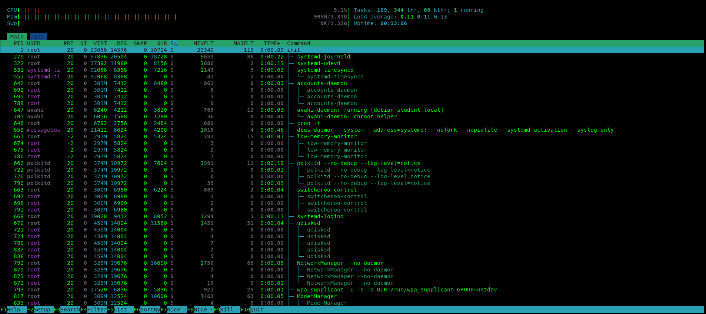

htop
✅ Note de révision : Ce tableau dynamique n'est pas magique. Le noyau Linux stocke toutes ces métriques en RAM dans la Table des Processus (via des structures complexes en C nomméestask_struct). L'utilitairehtopne fait que lire le système de fichiers virtuel/procpour extraire et afficher ces données en temps réel.
La section supérieure gauche et droite donne une vue instantanée des ressources physiques de la machine :
1 running : un seul processus occupe le CPU à cet instant t).Chaque ligne du tableau correspond à une entrée active de la table des processus du noyau.
| Colonne | Type de composant | Signification et Rôle Système |
|---|---|---|
| PID | OS / Noyau | Process Identifier. Numéro unique attribué par le noyau dans la table des processus lors d'un fork. Le PID 1 correspond toujours à init (ou systemd), le premier processus lancé. |
| USER | OS / Noyau | Le propriétaire du processus (ex: root). Détermine les droits d'accès mémoire et fichiers. |
| PRI & NI | CPU / Scheduler | Priorité interne du noyau (PRI) et valeur de courtoisie (NI / Nice). Utilisées par l'ordonnanceur pour attribuer plus ou moins de tranches de temps CPU au processus. |
| VIRT | Mémoire Virtuelle | Taille totale de l'espace d'adressage virtuel. C'est l'ensemble des segments/régions (Code, Données, Pile) que le processus croit posséder. Comprend le code non chargé et les bibliothèques partagées. |
| RES | RAM Physique | Resident Set Size. La quantité exacte de mémoire virtuelle qui a été validée par la MMU et qui se trouve physiquement en RAM (les pages avec le bit de contrôle Présent = 1). |
| SWAP | Mémoire de masse | Fraction des pages de données anonymes (variables, tas/malloc) du processus qui ont été éjectées de la RAM et écrites dans la zone de Swap sur le disque dur. |
| SHR | RAM Partagée | Shared Memory. Quantité de mémoire résidante (`RES`) qui est partagée avec d'autres processus. C'est la preuve concrète que la Table des Régions globale du noyau fait pointer plusieurs processus vers les mêmes zones physiques de la RAM (ex: bibliothèques dynamiques). |
| S | CPU / États | L'état actuel du processus dans son cycle de vie (S = Sleeping/En attente d'un événement, R = Running/En train de calculer sur le CPU, Z = Zombie). |
| MINFLT | MMU / Gestionnaire | Minor Page Faults. Nombre de défauts de page légers. La MMU interroge la table des régions, voit que la page est déjà en RAM (ex: allouée par un autre processus), et met à jour l'annuaire local instantanément sans toucher au disque. |
| MAJFLT | MMU / Disque | Major Page Faults (Défaut de page lourd). La MMU crie Présent = 0. Le processus est bloqué, et le noyau doit déclencher une entrée/sortie lente (souvent via DMA) pour charger le bloc depuis le disque dur vers la RAM. C'est pourquoi le PID 1 (init) en a beaucoup au démarrage (110) : il doit charger tout son code depuis le disque. |
| TIME+ | CPU / Temps consommé | Temps de calcul cumulé réel sur les circuits du processeur (Format Minutes:Secondes.Centièmes). Mis à jour par le noyau à chaque Context Switch. Ne prend pas en compte le temps passé à l'état de sommeil (S). |
| COMMAND | Application | Le nom du programme ou la ligne de commande brute qui a généré ce processus. |